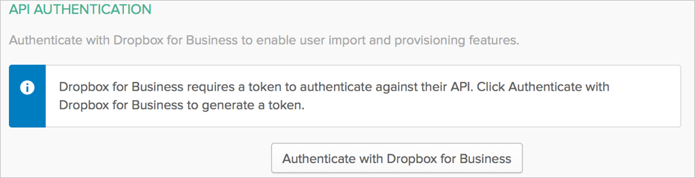
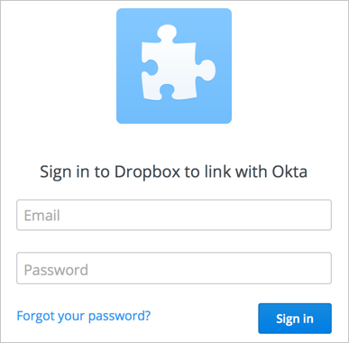
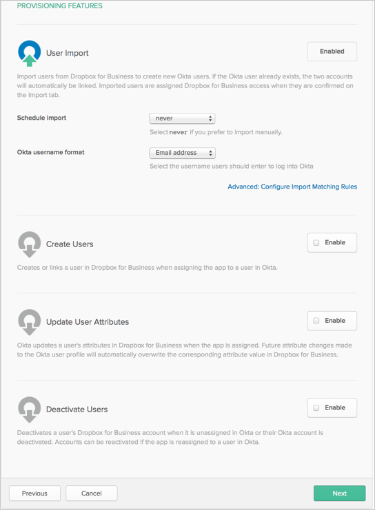
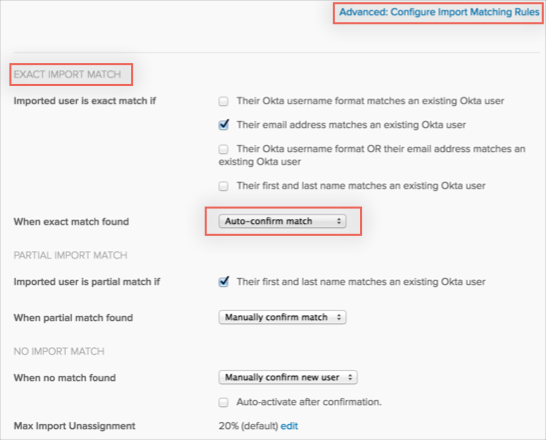

This guide provides the steps required to configure Provisioning for Dropbox Business, and includes the following sections:
The following provisioning features are supported:
Push New Users
New users created through OKTA will also be created in the third party application.
Push Profile Updates
Updates made to the user's profile through OKTA will be pushed to the third party application.
Push User Deactivation
Deactivating the user or disabling the user's access to the application through OKTA will deactivate the user in the third party application.
Note: For this application, deactivating a user means removing all of user's data and removing the user's account.
Import New Users
New users created in the third party application will be downloaded and turned in to new AppUser objects, for matching against existing OKTA users.
Import Profile Updates
Push Groups
Groups and their members can be pushed to remote systems. For more about using group push operations see Using Group Push.
Before you configure provisioning for Dropbox Business, make sure you have configured the General Settings and any Sign-On Options for the Dropbox Business app.
Note: Under Sign-On Options you can select the Silent Provisioning. If you select this, you are preventing Dropbox from sending welcome emails to new users being provisioned into Dropbox from Okta. This feature is mainly to be used with SAML authentication, as users will not receive an email with their Reset Password link.
In order to use the Silent Provisioning feature you must:
Setup SSO in the Dropbox admin console.
Claim your Dropbox Domain with Dropbox (someone with authority to claim the domain, such as an IT admin who manually verifies the domain with Dropbox. This is done by one person and only once).
Once the above steps are complete, the flow from the Okta side is:
The Okta admin provisions the Dropbox users with Silent Provisioning enabled.
If the user is already a basic or pro user in Dropbox (that is, has a personal account), they are taken through the team onboarding/migration flow the next time they log in to Dropbox. At the same time, their desktop client stops syncing and prompts them to onboard to the team account they are invited to.
If the user does not already exist in Dropbox, they are directed to https://www.dropbox.com/sso to login where they need to get their accounts activated. As these users are not already on Dropbox, and Okta hasn’t sent them invitations by email, they need to be notified of this URL by some other means.
By default the Silent Provisioning option is disabled. That means, that new users will retrieve welcome email. You may switch that option at any time.

Note: This option works only if provisioning is enabled.
Click Next to take you back to the Provisioning tab.
Configure your Provisioning settings for Dropbox Business as follows:
Check the Enable provisioning features box.
API Authentication:
Click the Authenticate with Dropbox Business button:

You will be redirected to Dropbox page, which prompts you to enter your credentials:

Then you are asked to confirm that you will allow access to your account via OKTA:

You are then redirected back to OKTA to continue application configuration.
Scroll down and select the Provisioning Features you want to enable.

Click Next
You can now assign people to the app (if needed) and finish the application setup.
The Dropbox Business App supports Invited User Administration. This means that invited users (including those who have not accepted invitations) can be updated and added to groups via Okta. This functionality was not supported in the old Dropbox Application.
If you are migrating from the old Dropbox application to the Dropbox Business Application in Okta, follow the recommended migration steps below:
Disable provisioning for old DropBox (at a minimum, turn off user deactivation under the Provisioning tab).
Configure new DropBox Business app instance and enable provisioning for the same new dropbox org,
Select Advanced: Configure Import Matching Rules, then in the EXACT IMPORT MATCH section, select Auto-confirm match.

Go to your new DropBox Business app and perform an import new user. All existing users will be auto-confirmed.
If Silent Provisioning is enabled, new users must go to https://www.dropbox.com/sso in order to get their accounts activated.
Users without First Name or/and Last Name in their Dropbox profiles cannot be imported to Okta as new users.